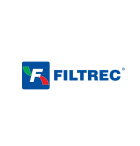
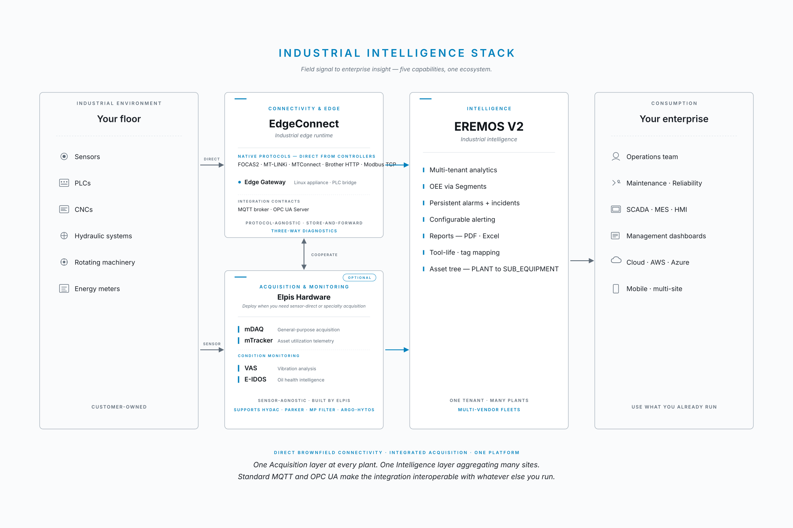

Connectivity & Edge
Direct, brownfield-ready connectivity to existing controllers via native protocols.
Elpis combines edge connectivity, sensor-direct acquisition, condition monitoring, and operational intelligence in a single ecosystem. Brownfield-ready. Sensor-agnostic. Built end-to-end by Elpis — or layered into what you already run.
See the architectureTrusted across automotive, heavy manufacturing, energy, and defense · Deployed across India and the Middle East · AMC-partner ready
Trusted by industrial leaders across automotive, energy, heavy manufacturing, and defense

Direct, brownfield-ready connectivity to existing controllers via native protocols.
Sensor-direct acquisition for assets without controllers or with controllers that won't share data.
Continuous asset utilization telemetry — even on legacy or unconnected machines.
Vibration analysis and hydraulic-oil contamination intelligence — sensor-agnostic, multi-vendor.
Multi-tenant analytics, OEE, alerts, reports — across plants, in one view.
EdgeConnect reads existing controllers directly. Acquisition hardware captures sensors that controllers won't expose. Both feed EREMOS V2. Standard MQTT and OPC UA make every layer interoperable with whatever you already run.

One Acquisition layer at every plant. One Intelligence layer aggregating many sites.
Standard MQTT and OPC UA make the integration interoperable with whatever else you run.
Multi-channel data acquisition for any analog or digital signal — connect what controllers won't expose.
Continuous machine-run telemetry — even on un-connected legacy assets. Tracks utilization, status, cycle data.
Real-time vibration capture and analysis for rotating machinery — early warning before failure.
In-line hydraulic oil contamination monitoring. Elpis-built Sensor/HMI controller, sensor-agnostic input (HYDAC, Parker, MP Filter, Argo-hytos).
Industrial appliance running EdgeConnect — direct PLC integration where a Windows server isn't appropriate.
SENSOR-AGNOSTIC · BUILT BY ELPIS · DEPLOYED ACROSS DEFENSE, AEROSPACE, AND HEAVY MANUFACTURING
EdgeConnect runs on the factory floor as a Windows service or Linux appliance. It reads controllers directly via native protocols (FOCAS2, MT-LINKi, MTConnect, Brother HTTP, Modbus TCP), normalizes every signal to a canonical model, and routes it to MQTT brokers, OPC UA servers, HTTP endpoints, or TCP listeners — to EREMOS V2 or to whatever you already run.
FOCAS2 · MT-LINKi · MTConnect · Brother HTTP · Modbus TCP · OPC UA
AtMostOnce · AtLeastOnce (per route)
Source · Pipeline · Sink (always-on three-way visibility)
EREMOS V2 is the Elpis intelligence platform — multi-tenant analytics, OEE via Segments, persistent alarms and incidents, configurable alerting, PDF and Excel reports, tool-life tracking, and the full PLANT-to- SUB_EQUIPMENT asset tree. One tenant, many plants, multi-vendor fleets.
PLANT → AREA → LINE → EQUIPMENT → SUB_EQUIPMENT
One tenant aggregates many plants — multi-vendor by design
Scheduled or on-demand, per asset / per shift / per segment
Satellite radar antenna vibration monitoring — VAS deployed via 3rd-party supplier to a national defense customer.
E-IDOS deployed in defense and AMC contexts in India and the Middle East — prevents unexpected hydraulic shutdowns.
Maintenance and AMC providers across India and the Middle East deploy Elpis hardware in their service offerings.
VAS, E-IDOS, mTracker keep your maintenance team ahead of failure — not reacting to it.
EREMOS V2 aggregates real signal from real machines. No spreadsheets. No estimation.
White-label-ready hardware, AMC-channel pricing, partner enablement collateral.
30-minute discovery call — we walk your asset list and tell you which capabilities give you the fastest return.
{kind=link}